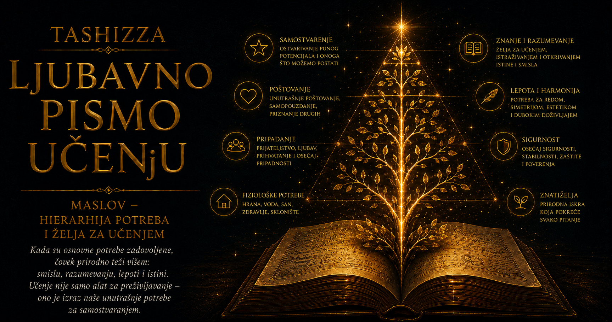

Ljubavno pismo učenju

Početkom dvadesetog veka psihologija je sve sigurnije zauzimala mesto među naukama, ali je čovek u njenim vodećim teorijama često izgledao manji od sopstvenog iskustva. Biheviorizam ga je posmatrao kroz ponašanje koje se može videti, izmeriti i menjati uslovljavanjem, dok je psihoanaliza pogled usmeravala prema nesvesnim nagonima, potisnutim željama i unutrašnjim sukobima. Obe škole otvorile su velika polja saznanja: jedna je pokazala koliko okruženje oblikuje navike, a druga koliko prošlost nastavlja da živi u čovekovoj sadašnjosti. Između naučenih reakcija i sila nesvesnog ostajao je, međutim, nedovoljno istražen prostor ljudske sposobnosti da raste, stvara, bira vrednosti, traga za smislom i razvija mogućnosti koje se ne mogu objasniti samo nagradom, kaznom ili odbranom od unutrašnje napetosti.
Psihologija je mnogo znala o strahu, prinudi, neurozi i prilagođavanju, dok je zdravlje najčešće određivala odsustvom poremećaja. Takvo merilo teško je moglo da obuhvati naučnika koji godinama ostaje uz problem bez neposredne spoljne nagrade, umetnika koji istrajava u radu uprkos materijalnoj nesigurnosti, nastavnika koji smisao pronalazi u tuđem razvoju ili čoveka koji sopstvenu bezbednost izlaže opasnosti da bi zaštitio drugoga. Glad, strah, seksualni nagon, društveni pritisak i uslovljavanje objašnjavali su važan deo ponašanja, ali je ljudski život pokazivao i sposobnost da se udobnost žrtvuje zarad istine, položaj zarad dostojanstva, a trenutna korist zarad cilja čija se vrednost prepoznaje tek u budućnosti.
Iz tog neistraženog prostora nastalo je pitanje koje će promeniti govor o ljudskoj motivaciji: šta je čoveku potrebno da bi mogao da opstane, pripada, sazreva i razvije ono najbolje za šta je sposoban? Abraham Maslov je tokom četrdesetih godina dvadesetog veka predložio odgovor u kome potrebe čine uređenu, ali pokretnu celinu. Neke od njih dobijaju snagu hitnosti jer štite život i osnovnu stabilnost, dok se druge jasnije oglašavaju kada neposredna ugroženost oslabi i pažnja dobije slobodu da se okrene bliskosti, dostojanstvu, znanju, stvaranju i smislu. Ista osoba može u jednom trenutku biti zaokupljena glađu, u drugom strahom od gubitka, zatim čežnjom za prihvatanjem, a potom potrebom da njen rad ostavi trag i izrazi vrednosti prema kojima želi da živi.
U radu „Teorija ljudske motivacije”, objavljenom 1943. godine, Maslov je potrebe rasporedio prema njihovoj relativnoj premoći. Fiziološke potrebe za hranom, vodom, snom, vazduhom i telesnom ravnotežom lako preuzimaju čitavo polje pažnje kada su ozbiljno ugrožene. Gladnom čoveku svet počinje da se organizuje oko hrane, pa se njegova sećanja, opažanja, planovi i očekivanja okreću prema onome što može da prekine oskudicu. Kada su fiziološke potrebe dovoljno zadovoljene, njihova vlast slabi i više prostora dobija potreba za sigurnošću, koja obuhvata zaštitu od nasilja i bolesti, predvidljivost svakodnevice, pouzdanost odnosa, stabilnost doma i osećanje da sutrašnji dan neće potpuno razoriti ono što je danas mukotrpno izgrađeno.
Posle telesne stabilnosti i sigurnosti snažno se oglašava potreba za ljubavlju i pripadanjem. Čoveku je potreban odnos u kome je viđen, prihvaćen i povezan sa drugima, kao i zajednica u kojoj njegovo prisustvo ima značenje. Maslov je usamljenosti dao psihološku ozbiljnost koju joj društvo često uskraćuje, jer dugotrajno odsustvo pripadanja menja način na koji čovek tumači tuđe reči, ulazi u odnose, doživljava sebe i očekuje budućnost. Dete koje se u školi svakodnevno oseća odbačeno teško oslobađa pažnju za radoznalo učenje, dok radno mesto prožeto poniženjem troši ljudsku energiju na oprez i samoodbranu, čak i kada zaposlenom obezbeđuje redovnu platu.
Sa pripadanjem je povezana potreba za uvažavanjem, koja obuhvata unutrašnje osećanje sposobnosti i dostojanstva, ali i želju da stvarni doprinos bude prepoznat. Zdravo samopoštovanje raste iz iskustva da nešto umemo, da možemo preuzeti odgovornost, da svojim radom doprinosimo i da naš glas ima težinu. Društveno priznanje dobija pun smisao kada potvrđuje stvarnu vrednost, dok prazna pohvala, status bez sadržaja i prestiž koji prikriva nesigurnost pružaju samo kratkotrajnu utehu. Čoveku je potrebno dublje uporište: sposobnost koju može da primeni, sloboda da odlučuje i svest da njegov trud pripada životu zajednice.
Na višem području motivacije Maslov je govorio o samoaktualizaciji, težnji da čovek razvije i ostvari mogućnosti koje nosi u sebi. Popularna kultura kasnije je ovaj pojam povezala sa slavom, samopouzdanjem, uspešnom karijerom i neprekidnim napredovanjem, iako je njegovo izvorno značenje bilo mnogo šire i zahtevnije. Za jednog čoveka samoaktualizacija može poprimiti oblik komponovanja, za drugog istraživanja, roditeljstva, lečenja, obrazovanja, obrade zemlje, izgradnje pouzdane ustanove ili tihog rada kojim se čuva zajednica. Njeno merilo nalazi se u punom korišćenju sposobnosti u skladu sa onim što osoba doživljava kao istinito, odgovorno i vredno.
U ovoj tački nalazi se jedan od najvažnijih Maslovljevih uvida: deo ljudske motivacije proističe iz nedostatka, dok drugi deo pripada rastu. Glad, strah, usamljenost i povređeno samopoštovanje stvaraju napetost koja traži ublažavanje, pa zadovoljavanje potrebe privremeno uspostavlja ravnotežu. Znanje, stvaralaštvo, lepota i smisao ponašaju se drugačije, jer njihovo ostvarivanje često povećava želju za daljim razvojem. Učenje budi novu radoznalost, dobro obavljen rad otvara zahtevniji cilj, a razumevanje jedne pojave čini nepoznato još vidljivijim. Čovek koji razvija svoje sposobnosti ne vraća se u prethodno mirno stanje, pošto se pred njim širi prostor novih pitanja i mogućnosti.
Hijerarhija potreba zamišljena je kao dinamičan odnos snaga, a ne kao nepromenljivo stepenište kojim svi ljudi napreduju istim redom. Maslov je pisao o relativnoj premoći potreba, različitim stepenima njihove zadovoljenosti i njihovom stalnom preplitanju. Čovek može istovremeno biti delimično siguran, snažno željan pripadanja, povremeno gladan priznanja i duboko posvećen stvaralačkom radu. Potreba koja je godinama mirovala u pozadini može se naglo pojačati posle bolesti, gubitka posla, preseljenja, rata ili prekida bliskog odnosa, dok vrednosti, karakter i životno iskustvo omogućavaju da se višem cilju ponekad svesno dâ prednost nad neposrednom udobnošću.
Upravo ta pokretljivost pomaže da razumemo ponašanja koja bi spolja mogla izgledati protivrečno. Čovek može odbiti dobro plaćen posao koji mu oduzima dostojanstvo, ostati u opasnom gradu zbog porodice ili podneti glad tokom političkog protesta, stavljajući moralni zahtev iznad telesne udobnosti. Umetnik može stvarati u siromaštvu, zatvorenik sačuvati unutrašnju slobodu, a roditelj sopstvenu sigurnost podrediti sigurnosti deteta. Takvi primeri otkrivaju da ljudska motivacija obuhvata potrebe, naučena značenja, pripadnost, moralni izbor i sposobnost da se život organizuje oko vrednosti koja prevazilazi trenutnu korist.
Kada je teorija prešla u udžbenike, seminare i poslovne priručnike, njena složenost počela je da se sabija u čuvenu sliku piramide. Široka osnova predstavljala je fiziološke potrebe, iznad nje su se uredno ređale sigurnost, ljubav, poštovanje i samoaktualizacija, pa je geometrijska jasnoća stvarala utisak da se svaki sprat mora potpuno završiti pre prelaska na sledeći. Maslov u svojim ključnim radovima nije nacrtao petospratnu piramidu koja je kasnije postala gotovo nerazdvojna od njegovog imena. Taj prikaz učvrstili su kasniji tumači, naročito autori udžbenika i literature o upravljanju, jer je bio pregledan, lako pamtljiv i pogodan za prenošenje.
Piramida je teoriji donela ogromnu prepoznatljivost, ali je iz nje uklonila veliki deo kretanja. Maslovljev model dopušta delimično zadovoljavanje, istovremeno delovanje više motiva, ponovno jačanje ranijih potreba i odstupanja koja proizlaze iz ličnih vrednosti, kulturnog okruženja i životnih okolnosti. Čovek zato može graditi sigurnost, popravljati narušene odnose, razvijati sposobnosti i tragati za smislom tokom istog životnog razdoblja. Njegov unutrašnji svet više podseća na kuću u kojoj se istovremeno učvršćuje temelj, razgovara za stolom, radi u radionici i otvara prozor prema nepoznatom nego na građevinu čiji se spratovi zauvek zatvaraju čim budu dovršeni.
Maslov je u kasnijim radovima razmatrao kognitivne potrebe za znanjem i razumevanjem, estetske težnje prema redu, skladu i lepoti, kao i samotranscendenciju, pri kojoj se središte motivacije pomera izvan uskog ličnog interesa. Ljudi žele da razumeju i onda kada im znanje ne donosi neposrednu korist: posmatraju zvezde, proučavaju izumrle jezike, rešavaju matematičke probleme i tragaju za obrascem koji rasute činjenice povezuje u smislenu celinu. Na još daljim dometima razvoja čovek svoje sposobnosti može posvetiti istini, pravdi, ljubavi, stvaralaštvu, zajednici ili generacijama koje još nisu rođene. Lično ostvarenje tada dobija širi smisao kroz ono što se znanjem, radom i brigom vraća svetu.
Ideja o ljudskim potrebama snažno je uticala na humanističku psihologiju, obrazovanje, psihoterapiju, organizaciono ponašanje, zdravstvenu negu i socijalni rad. U obrazovanju je pomogla da se učenik vidi kao celovita osoba čija sposobnost učenja zavisi i od gladi, straha, pripadanja, odnosa sa nastavnikom i osećanja kompetentnosti. U svetu rada pružila je jezik za razumevanje značaja sigurnosti zaposlenja, pravičnosti, autonomije, poštovanja i smislenog zadatka. U medicini i humanitarnoj pomoći podsetila je da čoveku, pored telesne zaštite, pripadaju jasna informacija, dostojanstvo, društvena podrška i mogućnost da učestvuje u odlukama koje određuju njegov život.
Poslovni svet istovremeno je pokazao koliko se lako psihološka ideja može pretvoriti u administrativnu tabelu. Organizovanje jednog druženja ne može trajno zadovoljiti potrebu za pripadanjem u kolektivu prožetom nepoverenjem, kao što simbolična pohvala teško nadoknađuje odsustvo pravičnosti, autonomije i stvarnog prava glasa. Slična opasnost pojavila se u marketingu i digitalnom dizajnu, gde se potrebe za povezanošću, priznanjem i samopotvrđivanjem mogu koristiti za privlačenje pažnje i proizvodnju osećanja nedovoljnosti. Teorija zamišljena kao okvir za razumevanje ljudskog dostojanstva tada postaje precizna mapa ranjivosti koju neko drugi pokušava da pretvori u profit.
Naučna kritika hijerarhije razvijala se uporedo sa njenom popularnošću. Maslov je zaključke o samoaktualizaciji izvodio iz biografskih studija, posmatranja i malog broja ljudi koje je prema sopstvenoj proceni smatrao izuzetno zdravim i ostvarenim. Takav postupak pružio je bogate opise, ali nije obezbedio standardizovano merenje, reprezentativan uzorak ni pouzdanu potvrdu univerzalnog redosleda potreba. Kasniji pregledi istraživanja pokazali su da su sigurnost, bliskost, poštovanje, smisao i razvoj zaista važni za ljudsko blagostanje, dok njihovo pojavljivanje ne sledi svuda isti niz niti zahteva potpuno zadovoljenje prethodnog nivoa.
Kulturna kritika dodatno je pokazala koliko predstava dobrog života zavisi od načina na koji zajednica razume ličnost, odgovornost i ostvarenje. Model je nastao u američkom društvu koje je snažno vrednovalo individualni razvoj, samostalnost i lični izbor. U kulturama usmerenim prema porodici, zajednici i uzajamnim obavezama pripadanje može činiti trajno središte identiteta, dok se puno ostvarenje doživljava kroz brigu o drugima i ispunjavanje zajedničke odgovornosti. Sam Maslov je u poznijem radu pomerao težište prema samotranscendenciji, čime je vrh razvoja sve manje pripadao izolovanom pojedincu, a sve više osobi sposobnoj da svoje darove stavi u službu šire vrednosti.
Savremena psihologija motivacije zato češće govori o međuzavisnim potrebama i sistemima nego o jednoj univerzalnoj piramidi. Telo, odnosi, identitet, kultura i vrednosti neprestano deluju jedni na druge: gubitak sigurnosti može oslabiti stvaralačku energiju, dok smislen rad pomaže čoveku da izdrži nesigurnost; usamljenost može narušiti samopoštovanje, a razvijanje sposobnosti otvoriti put prema novim odnosima i osećanju pripadanja. Maslovljeva velika intuicija o raznovrsnosti ljudskih potreba pokazala se znatno otpornijom od predstave o njihovom strogo propisanom redosledu.
Najdublji trag ove ideje nalazi se u promeni slike o čoveku. Ljudsko biće dobilo je pravo na složenost: ono je telesno i društveno, ranjivo i stvaralačko, željno zaštite i sposobno da je žrtvuje zarad vrednosti, zavisno od drugih i pozvano da razvije sopstveni glas. Čoveku su potrebni hrana, san i krov, a sa njima i bliskost, dostojanstvo, znanje, lepota, stvaranje i osećanje da njegova snaga služi nečemu što traje duže od trenutnog zadovoljstva.
Maslovljeva hijerarhija danas ima najveću vrednost kao razvojna zamisao koja usmerava pažnju prema uslovima ljudskog procvata. Njena pojednostavljena piramida proputovala je svet, dok je složenija ideja nastavila da se menja kroz naučne kritike, međukulturna istraživanja i primene koje njen autor nije mogao predvideti. Tim preobražajem postala je veća od svog tvorca i pridružila se širem nastojanju da razumemo šta čoveka održava, šta ga povezuje sa drugima, šta ga oslobađa za učenje i na koji način svoje mogućnosti može pretvoriti u život koji poseduje oblik, pravac i smisao.